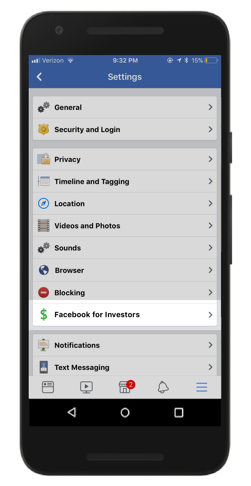
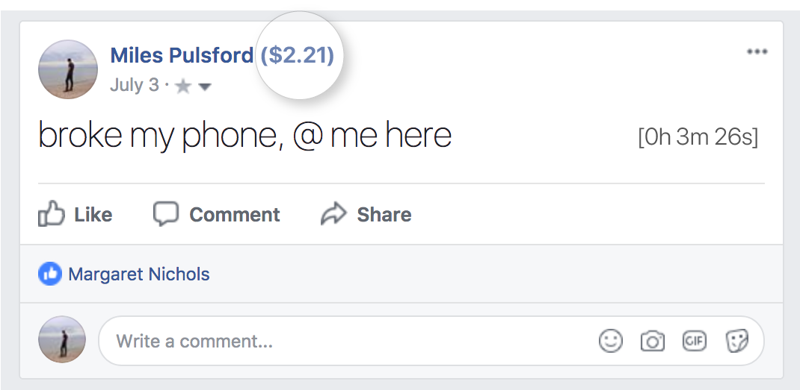
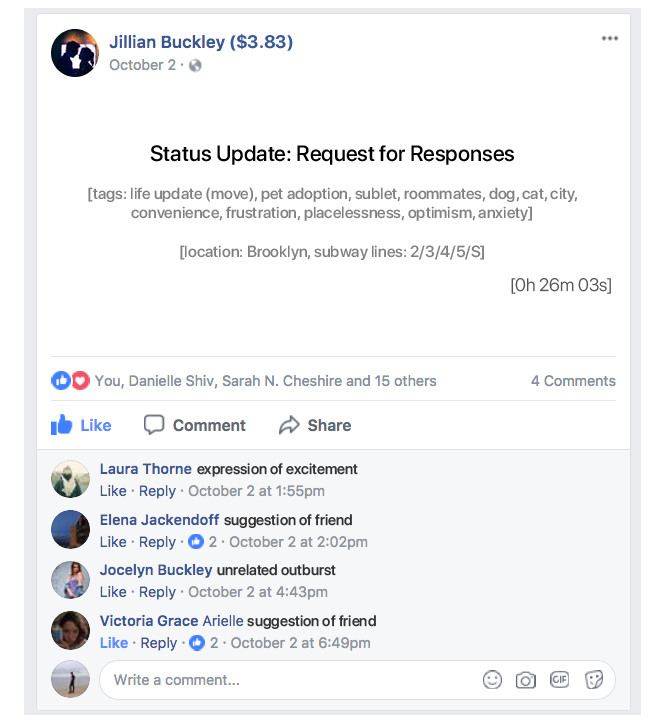
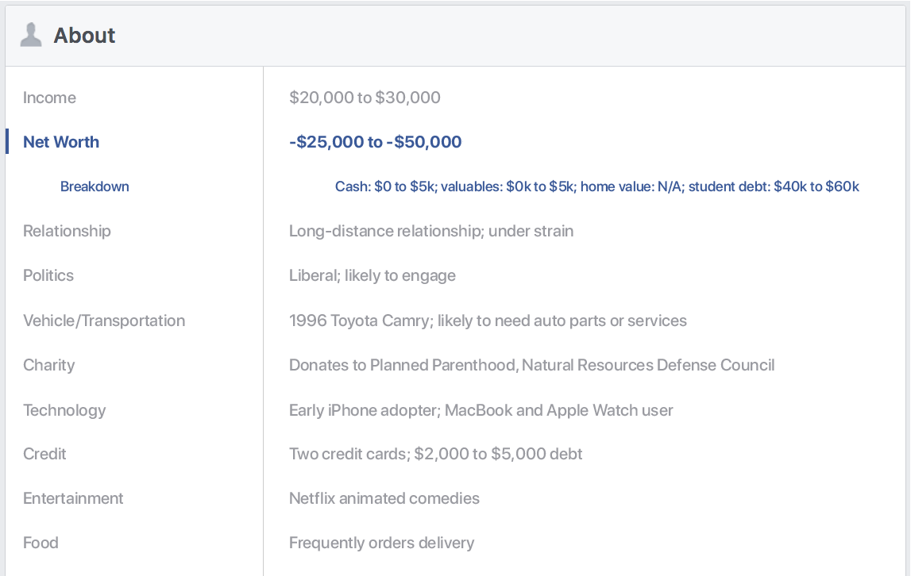

Facebook for Investors
If you've considered investing in Facebook, but are (understandably) concerned about giving your hard-earned money to a company with a primary product that's completely free for anyone to use, we may finally have a solution for you: Facebook for Investors.
Facebook's value for those with capital to spare has always been somewhat hidden from public view; we found it best not to remind people how we monetize the data they willingly hand over. In the interests of transparency and in attracting new investors, we're announcing an optional new plug-in that pulls back the curtain on just how we reached a $520 billion market cap.
You can enable Facebook for Investors on your Settings page.
User Value Score: Anywhere you see a user's name, you'll now also see a numerical score in the form of a dollar value. This score is a highly accurate approximation of the return on investment advertisers can expect from paying to display ads to this particular user.
This individual's User Value Score means that for every $1 advertisers have spent to target this individual, he has spent approximately $2.21 on advertised products.
Post attention metrics: With Facebook for Investors, all News Feed and Timeline posts now clearly display exactly how much time users have spent reading, looking at, or responding to the content. It can be fun to see how much of your friends' time your provocative status updates can attract, but the main point of this feature is very simple: in the social media economy, attention = value. We're in the business of selling impressions, and every second counts.

Analysis Mode: For a look under our content analysis algorithm's hood, try Analysis Mode. This fun setting replaces all content with our AI's best understanding of what was posted. It's just like the "Post may contain" message you might see as images populate if you're loading Facebook on a slow Internet connection, but it applies to all content—even comments!
About page: To see just how well we understand our users, just go check out the About tab on anyone's profile. Instead of displaying whatever personal details that user has chosen to share (that is, information that's of interest to other users), the page now shows the particular segments and demographics into which our algorithms have placed the user (information that's useful to advertisers). Even better, we've limited the list to only those data points that are most optimal for targeting!
You may notice a correlation between User Value Scores and how much info is on the Facebook for Investors About tab.
Facebook for Investors will be available indefinitely, and we will continue rolling out features in the coming months. Enjoy!